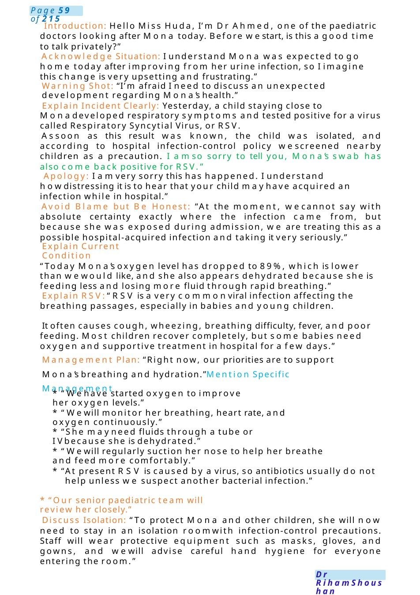
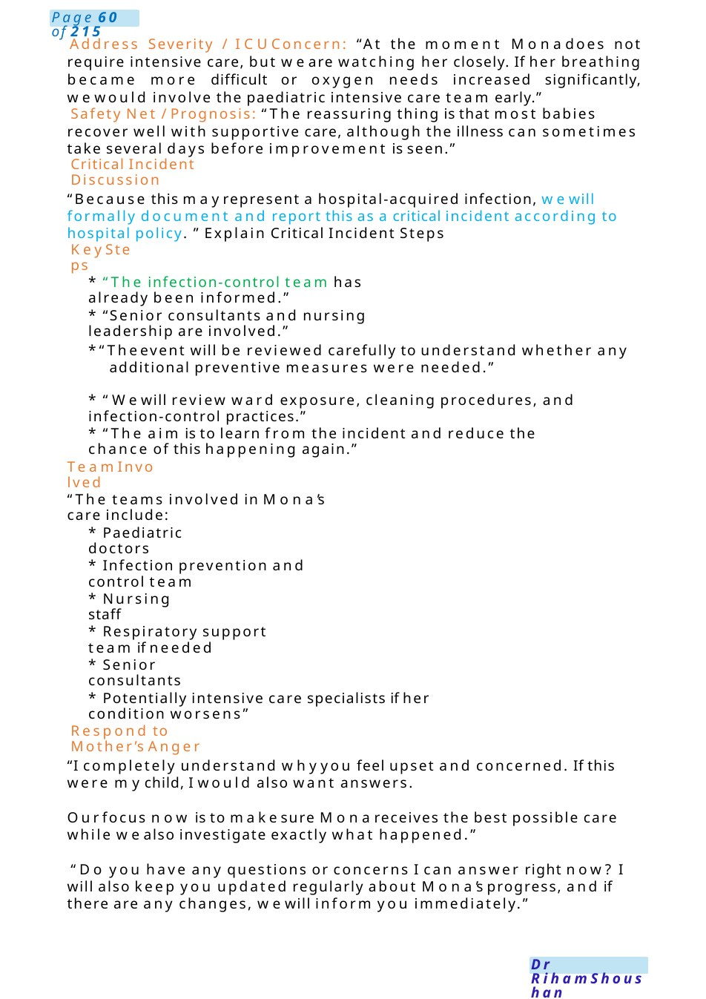
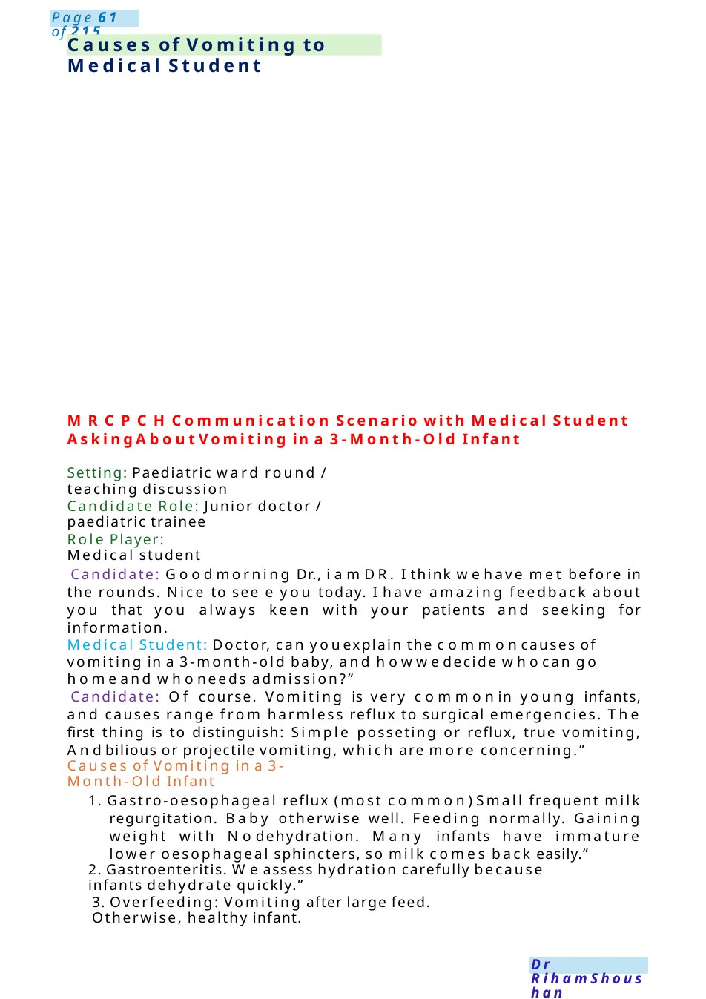

RSVApology
MRCPCHCommunication Scenario Critical Incident Disclosure – Hospital Acquired RSV Infection Candidate Instructions: Youare the paediatric registrar in the ward. Youare asked to speak with Miss Huda, mother of Mona, a 9-month-old girl admitted with febrile urinary tract infection.
Scenario Summary
MRCPCHCommunication Scenario Critical Incident Disclosure – Hospital Acquired RSV Infection Candidate Instructions: Youare the paediatric registrar in the ward. Youare asked to speak with Miss Huda, mother of Mona, a 9-month-old girl admitted with febrile urinary tract infection.
Full Original Scenario

RSVApology
MRCPCHCommunication Scenario Critical Incident Disclosure – Hospital Acquired RSV Infection
Candidate Instructions: Youare the paediatric registrar in the ward. Youare asked to speak with Miss Huda, mother of Mona, a 9-month-old girl admitted with febrile urinary tract infection.
Mona completed 6 days of IV antibiotics and was planned for discharge today. Yesterday, another child admitted nearby developed cough and respiratory symptoms. Nasopharyngeal swab confirmed RSVinfection. The child was isolated immediately, and screening swabs were taken from nearby patients. Mona’s swab is also positive for RSV.
Currently:
- Oxygen saturation: 89% in room air
- Mild to moderate dehydration
- Increased work of breathing
Yourtasks:
- Explain the situation honestly and sensitively
- Apologise appropriately
- Explain RSVinfection and likely source
- Discuss current condition and management plan
- Explain isolation measures
- Address mother’s emotions and concerns
- Explain escalation and critical incident process
- Mention multidisciplinary involvement and safety measures

Introduction: Hello Miss Huda, I’m Dr Ahmed, one of the paediatric doctors looking after Mona today. Before westart, is this a good time to talk privately?”
Acknowledge Situation: I understand Mona was expected to go home today after improving from her urine infection, so I imagine this change is very upsetting and frustrating.”
Warning Shot: “I’m afraid I need to discuss an unexpected development regarding Mona’s health.”
Explain Incident Clearly: Yesterday, a child staying close to Monadeveloped respiratory symptoms and tested positive for a virus called Respiratory Syncytial Virus, or RSV.
Assoon as this result was known, the child was isolated, and according to hospital infection-control policy wescreened nearby children as a precaution. I amso sorry to tell you, Mona’s swab has also come back positive for RSV.”
Apology: I amvery sorry this has happened. I understand howdistressing it is to hear that your child mayhave acquired an infection while in hospital.”
Avoid Blame but Be Honest: “At the moment, wecannot say with absolute certainty exactly where the infection came from, but because she was exposed during admission, we are treating this as a possible hospital-acquired infection and taking it very seriously.”
Explain Current Condition
“Today Mona’s oxygen level has dropped to 89%, which is lower than wewould like, and she also appears dehydrated because she is feeding less and losing more fluid through rapid breathing.”
Explain RSV:“RSV is a very commonviral infection affecting the breathing passages, especially in babies and young children.
It often causes cough, wheezing, breathing difficulty, fever, and poor feeding. Most children recover completely, but some babies need oxygen and supportive treatment in hospital for a few days.”
Management Plan: “Right now, our priorities are to support Mona’s breathing and hydration.”Mention Specific Management
- “Wehave started oxygen to improve her oxygen levels.”
- “Wewill monitor her breathing, heart rate, and oxygen continuously.”
- “She mayneed fluids through a tube or IVbecause she is dehydrated.”
- “Wewill regularly suction her nose to help her breathe and feed more comfortably.”
- “At present RSV is caused by a virus, so antibiotics usually do not help unless we suspect another bacterial infection.”
- “Our senior paediatric team will review her closely.”
Discuss Isolation: “To protect Mona and other children, she will now need to stay in an isolation roomwith infection-control precautions. Staff will wear protective equipment such as masks, gloves, and gowns, and wewill advise careful hand hygiene for everyone entering the room.”

Address Severity / ICUConcern: “At the moment Monadoes not require intensive care, but we are watching her closely. If her breathing became more difficult or oxygen needs increased significantly, wewould involve the paediatric intensive care team early.”
Safety Net / Prognosis: “The reassuring thing is that most babies recover well with supportive care, although the illness can sometimes take several days before improvement is seen.”
Critical Incident Discussion
“Because this mayrepresent a hospital-acquired infection, wewill formally document and report this as a critical incident according to hospital policy. ” Explain Critical Incident Steps
Key Steps
- “The infection-control team has already been informed.”
- “Senior consultants and nursing leadership are involved.”
- “Theevent will be reviewed carefully to understand whether any additional preventive measures were needed.”
- “Wewill review ward exposure, cleaning procedures, and infection-control practices.”
- “The aim is to learn from the incident and reduce the chance of this happening again.”
Team Involved
“The teams involved in Mona’s care include:
- Paediatric doctors
- Infection prevention and control team
- Nursing staff
- Respiratory support team if needed
- Senior consultants
- Potentially intensive care specialists if her condition worsens”
Respond to Mother’s Anger
“I completely understand whyyou feel upset and concerned. If this were mychild, I would also want answers.
Ourfocus now is to makesure Monareceives the best possible care while wealso investigate exactly what happened.”
“Do you have any questions or concerns I can answer right now? I will also keep you updated regularly about Mona’s progress, and if there are any changes, wewill inform you immediately.”

Causes of Vomiting to Medical Student
MRCPCHCommunication Scenario with Medical Student Asking About Vomiting in a 3-Month-Old Infant
Setting: Paediatric ward round / teaching discussion
Candidate Role: Junior doctor / paediatric trainee
Role Player: Medical student
Candidate: Goodmorning Dr., i amDR. I think wehave met before in the rounds. Nice to see e you today. I have amazing feedback about you that you always keen with your patients and seeking for information.
Medical Student: Doctor, can youexplain the commoncauses of vomiting in a 3-month-old baby, and howwedecide whocan go homeand whoneeds admission?”
Candidate: Of course. Vomiting is very commonin young infants, and causes range from harmless reflux to surgical emergencies. The first thing is to distinguish: Simple posseting or reflux, true vomiting, Andbilious or projectile vomiting, which are more concerning.”
Causes of Vomiting in a 3-Month-Old Infant
1. Gastro-oesophageal reflux (most common)Small frequent milk regurgitation. Baby otherwise well. Feeding normally. Gaining weight with Nodehydration. Many infants have immature lower oesophageal sphincters, so milk comes back easily.”
2. Gastroenteritis. Weassess hydration carefully because infants dehydrate quickly.”
3. Overfeeding: Vomiting after large feed. Otherwise, healthy infant.